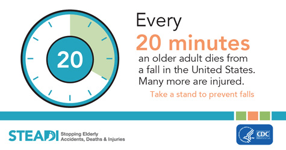

CSI Fall Detection
Author
Procedure
Results
Source:
Research Poster
An Ensemble Framework for Fall Detection
Using Multivariate Wi-Fi Channel State Information (CSI)
Read the paper
Explore the code

Source:
Secure Safety Solutions
Background
Falls are a significant global health concern, especially for the elderly population.
Traditional fall detection systems can be costly, intrusive, and inaccurate.
Wi-Fi sensing offers a non-invasive, cost-effective alternative using existing infrastructure.
Rationale
The goal was to improve the effectiveness of fall detection systems using Wi-Fi sensing.
This project focused on developing a signal processing framework tailored for this purpose.
Key techniques include filtering, feature extraction, and predictive algorithms to optimize performance.
Source:
Wireless Sensing and Communication Lab
Source:
Research Poster
Conclusions
The developed framework outperforms previous Wi-Fi-based fall detection systems.
MANOVA results showed a significant improvement with a p-value of 0.022.
Wi-Fi sensing is positioned as a promising alternative for future fall detection advancements.